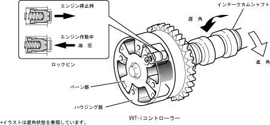

| VVT-I controller |
| ● |
A vVT-I controller of the vVT-I was provided on the intake cam shaft.
|
| ● |
It consists of a fixed housing part on the timing gear and a fixed vane on the camshaft.
|
| ● |
By rotating the hydraulic pressure from the OCV (oil control valve) in the advanced room and the late angle room of the VVT-I controller, the vane is rotated and the phase of the intake cam shaft is continuously variable.
|
| ● |
When the engine is stopped, it is fixed in the latest angle by the lock pin.When the engine starts, the lock pin is released by hydraulic pressure.
|
|  |
 VVT-I effect VVT-I effect
|